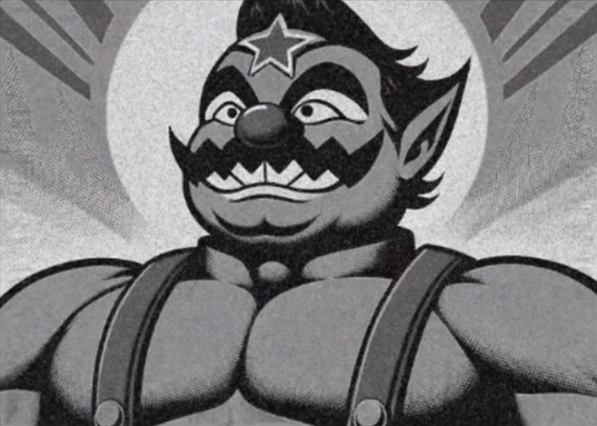
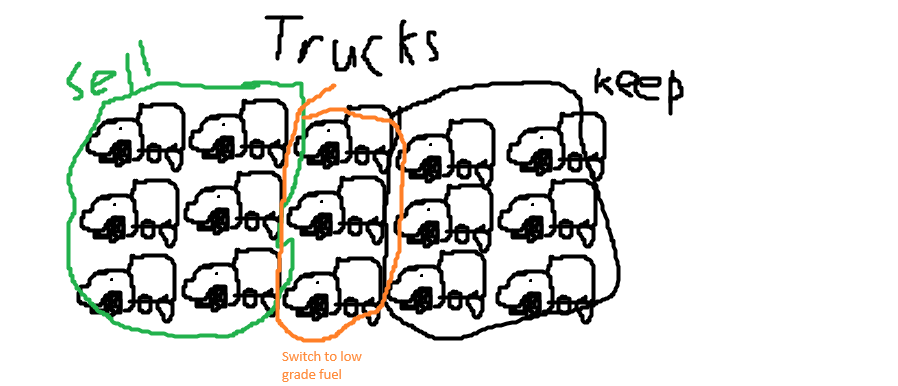

Mid April regular meeting minutes
4/14/2024
attendance list
- Jimmy
- Emma
- Paul
- Sartre
agenda
Finalize public announcement regarding embezzlement accusations. Resolve cost cutting measures. Finish planning end-of-quarter cookout.
new businessSend meeting proposal to mushroom kingdom branch. Look over new video from CEO (contents unknown). Congratulate Sartre on his newlyborn Niece!
"For now it is best we not commit to any one line regarding the embezzlement. We ourselves know little." -Sartre
"Maybe there'll be something in the video." -Jimmy
"It's probably another of his banal end of quarter talks." -Emma
"Better to watch video now. We will do everything anyway." -Sartre
"I prefer to finish old business before starting new business." -Jim
"Ok. I talk with everyone already before meeting, we agree on cost cutting with the delivery trucks?" -Sartre
"I take silence to mean 'yes.'" -Sartre
"You sure you can handle everything for the cookout, Emma?" -Jimmy
"I want to. I have excess meat I didn't even cook for Christmas. Its just been sitting in my freezer, and I have that smoker." -Emma
"Then it's video time now, yeah?" -Paul
"I can't believe that bastard did this to us." -Paul
"I need to call my mom." -Emma
"She's gone. We're finished here, right?" -Paul
"Please quiet. I need to think." -Sartre
"Yeah. Of course. Sure. What are you typing, Jim?"
"Jim?" -Paul
"Stop taking the minutes, Jim." -Paul
Stop! JIM, STOP!" -Paul
"Th- thi, -this- I," -Jimmy
"What? What are you on about? I- uh ee-aba-, Porky Pig. Spit it out, Jim!
"THIS IS ALL I HAVE LEFT! I DON'T HAVE A LIFE OUTSIDE OF HERE!" -Jimmy
"Then grow up! What are you gonna do, sit here catatonic until the missiles come down!?"
"I, I- may, I could-" -Jimmy
"Leave the boy be, Paul. He looks beyond us." -Sartre
"Fuck you, Sartre, I care about him!" -Paul
"Then save him on your own time. I need to buy plane tickets. I suggest you do likewise."
"Jimmy, I'm taking you away from the computer now. No more minutes." -Paul
"I don't- I can't-." -Paul
"... Jimmy, I'll put you in a sleeper hold. I'm saving you whether you like it or not. You might not think so, but your life's not some cheap thing you can throw away. Not to me." -Paul
"... ok."


MKIS. Acquired: 4/20/24. Inspector Kong. Designation: unclassified.
Regarding prosecution of elements of Wario Banks. It seems even relatively high level management was not included in the scandal or accountable for acts in the Wario files. This... emotional testimony, recovered from a company computer is my evidence to that fact. The travel dates of these individuals combined with the meta data of this document make its deliberate fabrication unlikely.
It is my recommendation based on this that Mushroom Kingdom Intelligence Services reserve suspicion to the target himself and his friend circle. The asylum claims of Wario Banks employees, managers, and affiliates should be held as valid. These individuals and their families should be afforded both justice and peace of mind.